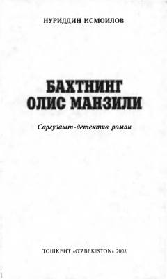

BOQishloqdan Toshkentga kelgan yigitning hayotiy sarguzashtlari va muhabbati haqidagi roman.
Ushbu asar hayot sinovlari, muhabbat va taqdir taqozosi bilan Toshkentga kelib qolgan oddiy qishloq yigiti Nodirning sarguzashtlari haqida hikoya qiladi. Kitobda insoniylik, qiyinchiliklarni yengish va hayotiy maqsadlar sari intilish ta'sirli tarzda ochib berilgan.